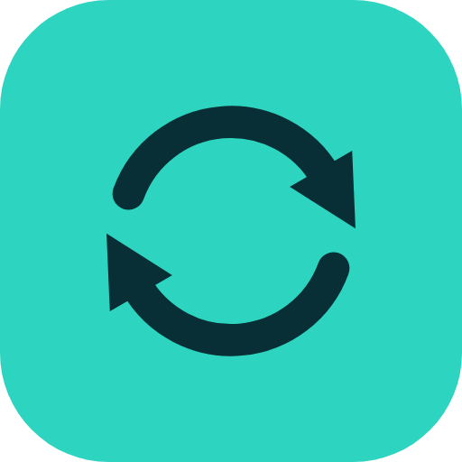
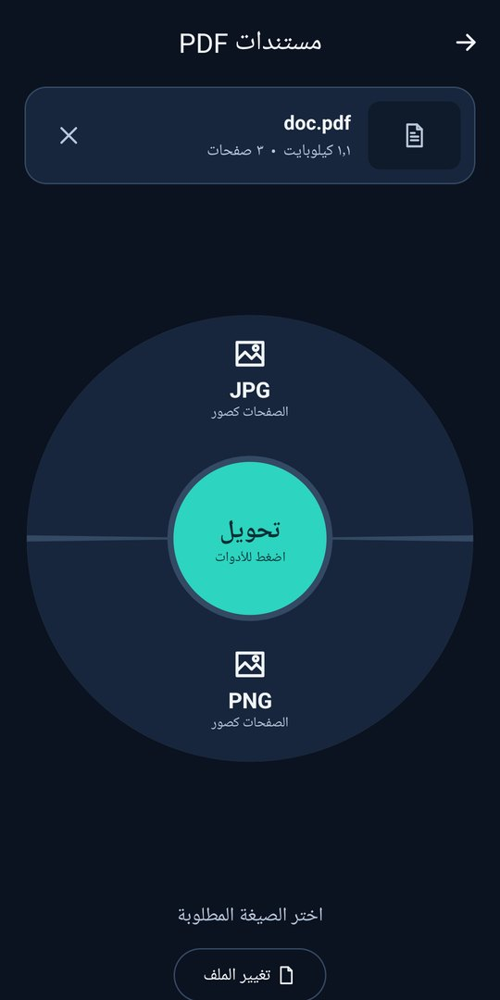
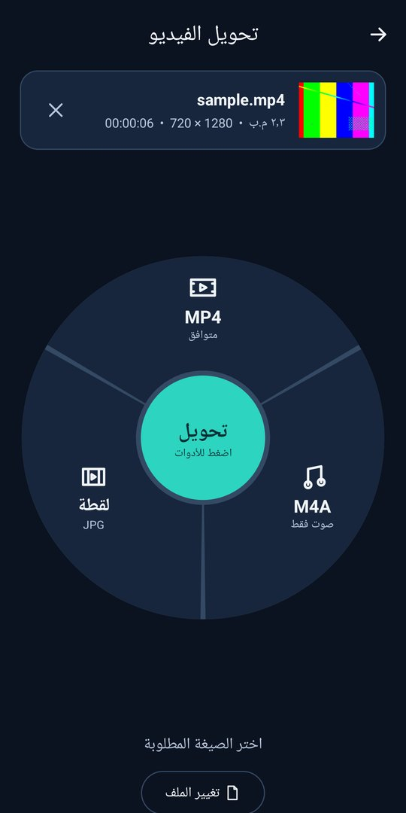
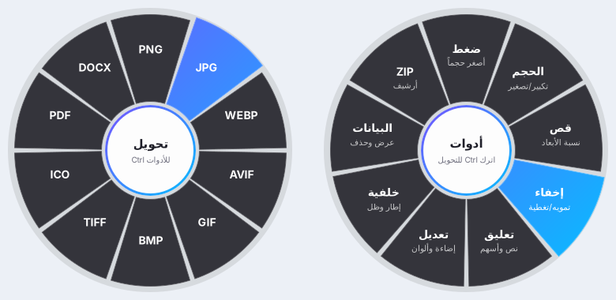

سحبصور، فيديو، صوت وملفات PDF. شارك الملف مع «سحب» واختر الصيغة من الدائرة، ويُحفظ الملف الجديد خلال ثوانٍ. كل شيء يتم على جهازك، بلا إنترنت وبلا رفع لملفاتك.
مجاني بالكامل · بلا إعلانات · عربي وإنجليزي
المس منتصف الدائرة للتبديل بين التحويل والأدوات.
تحويل إلى JPG أو PNG أو WEBP، أو جمع الصور في ملف PDF واحد.
تحويل إلى MP4 يعمل على كل الأجهزة، استخراج الصوت، أو أخذ لقطة صورة.
تحويل المقاطع الصوتية واقتطاع الجزء الذي تريده منها.
تحويل الصفحات إلى صور، دمج عدة ملفات، استخراج صفحات، وضغط الملفات الممسوحة.
تصغير حجم الصور والفيديو، القص بنسب جاهزة مثل 16:9 و 9:16، وتغيير الأبعاد.
إزالة الموقع ومعلومات الجهاز قبل المشاركة، وإضافة اسمك علامةً مائية على الصور وPDF.


حوّل الملفات بالسحب والإفلات، من أي مكان على الشاشة.

تطبيق أندرويد لا يملك إذن الوصول إلى الإنترنت أصلاً، فلا يمكنه رفع أي ملف. لا يجمع أي بيانات، ولا يحتوي على إعلانات أو أدوات تتبّع. سياسة الخصوصية
أحدث إصدار، مجاناً.
ملف Sahb.apk · Android 10 فأحدث. افتح الملف بعد تنزيله، ووافق على «التثبيت من هذا المصدر» إن طلب الهاتف ذلك.
تنزيل Sahb.apkملف Setup_Sahb.exe · Windows 10 و 11. يُثبَّت لحسابك فقط بلا صلاحيات المدير. إن ظهر تحذير SmartScreen اضغط «مزيد من المعلومات» ثم «تشغيل على أي حال».
تنزيل Setup_Sahb.exeنعم، مجاني بالكامل وبلا إعلانات أو اشتراكات.
لا. كل التحويل يتم على جهازك. الإنترنت مطلوب فقط لتنزيل التطبيق نفسه.
على أندرويد: في مجلد Sahb داخل الصور أو الأفلام أو الموسيقى أو التنزيلات حسب نوع الملف. على ويندوز: بجانب الملف الأصلي.
لأن التطبيق مُنزَّل من خارج المتجر وغير موقّع بشهادة تجارية. هذا تحذير عام يظهر لكل التطبيقات المثبّتة بهذه الطريقة.
راسلني على tahamnly2024@gmail.com.